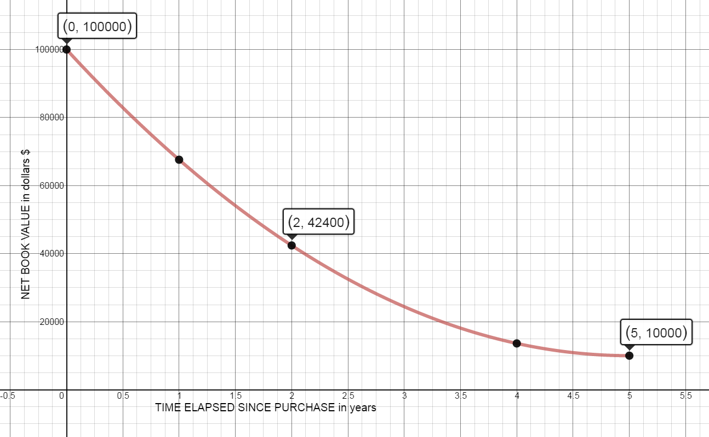

MATH 1830 Homework
Mary Monroe-Ellis
Susan Mosteller
Unit 1 Limits
- Unit 1 Limits
- 1.P Writing Equations of Lines
- 1.1A Limits Graphically and Algebraically
- 1.1B Limits Graphically and Algebraically
- 1.2A Infinite Limits and Asymptotes
- 1.2B Infinite Limits and Asymptotes
- 1.2C Infinite Limits and Asymptotes
- 1.3 Continuity
- 1.4A Definition of Derivatives
- 1.4B Definition of Derivatives
- 1.5A Derivatives: The Power Rule
- 1.5B Derivatives: The Power Rule
- 1.6 Marginal Analysis
1.P Writing Equations of Lines
Homework
-
A car rental firm has the following charges \$25 per day with 100 free miles included for a certain type of car with \$0.15 per mile for more than 100 miles. Suppose you want to rent a car for one day, and you know you will be driving more than 100 miles. What is the equation relating the cost y to the number of miles x that you drive the car?
$y=25+.15(x-100)$
$y=25+.15x-15$
$y=.15x+10$
-
An instructor gives a 100-point final exam and decides that a score of 90 or above will be a grade of 4.0, a score of 40 or below will be a grade of 0.0, and between 40 and 90 the grading will be linear. Let x be the exam score and let y be the corresponding grade. Find a formula in the form $y=mx+b$ which applies to the scores between 40 and 90.
$(90,4)$ $(40,0)$
$m=\frac{4-0}{90-40}=\frac{2}{25}=.08$
$y-0=.08(x-40)$
$y=.08x-3.2$
-
Let x stand for temperature in degrees Celsius and let y stand for temperature in degrees Fahrenheit. A temperature of 0° C corresponds to 32° F, and a temperature of 100° C corresponds to 212° F. Find the equation of the line that relates the temperature Fahrenheit y to the temperature Celsius x.
$(0,32)$
$m=\frac{212-32}{100-0}=\frac{180}{100}=\frac{18}{10}=\frac{9}{5}$
$y-32=\frac{9}{5}(x-0)$
$y-32=\frac{9}{5}x$
$y=\frac{9}{5}x+32$
-
Find the equation of the line through (1,1) and (-5,-3).
$m=\frac{1+3}{1+5}=\frac{4}{6}=\frac{2}{3}$
$y-1=\frac{2}{3}(x-1)$
$y-1=\frac{2}{3}x-\frac{2}{3}$
$y=\frac{2}{3}x+\frac{1}{3}$
-
Find the equation of the line through (-1,2) with slope -2.
$y-2=-2(x+1)$
$y-2=-2x-2$
$y=-2x$
-
Change the equation $y-2x=2$ to the form $y=mx+b$. Find the y-intercept and the x-intercept.
$y=2x+2$
$m=2$
$y-\operatorname{int}:(0,2)$
$x-\operatorname{int}:(-1,0)$
-
Change the equation $3=2y$ to the form $y=mx+b$. Find the y-intercept and the x-intercept.
$y=\frac{3}{2}$
$y-\operatorname{int}:\left( 0,\frac{3}{2} \right)$
$x-\operatorname{int}:none$
-
The graph below shows the amount remaining to be paid on a 30-year mortgage over the life of the mortgage.

- What is the slope of the graph and explain the meaning of the slope in this context?
$(0,150,000)\,and\,(30,0)$
$m=\frac{150,000-0}{0-30}=\frac{150,000}{-30}$
$m=-5000$
The amount to be paid decreased by $5000 per year
- What is the rate of change of the mortgage balance during this time period?
The mortgage balance decreases by $5000 per year
- Identify the horizontal and vertical axis intercepts and explain their significance to the mortgage holder.
y-int: Vertical Intercept: $(0,150,000)$ this is the original cost of house
x-int: Horizontal Intercept $(30,0)$ it will take 30 yrs to pay off mortgage
- What is the equation of the line?
$y=-5000x+150000$
- What is the slope of the graph and explain the meaning of the slope in this context?
1.1A Limits Graphically and Algebraically
Homework
Find the limits or evaluate the function. If the limit does not exist, explain why.![Coordinate plane graph with a discontinuous, piece-wise function. The x-axis ranges from -4 to 6, and the y-axis from -2 to 10. On the interval from -4 to -2, the graph is a horizontal line at y=6. There is an open circle at the point (-2,6) and a closed circle at the point (-2,8). There is an open circle at (-2,2) and another at (0,-2). These two open circles are connected with the function y=x squared minus 2. There is a closed circle at (0,-1.5). There is an open circle at (0,-1) and a closed circle at (2,7). These are connected with a curve. There is an open circle at (2,0). On the interval from 2 to infinity, the graph is a continuous cubic.](images/hw/u1s1p1.png)
-
$\underset{x\rightarrow-2}{lim}f(x)=$ Does Not Exist. There are different limits from the left and right.
-
$\underset{x\rightarrow-3}{lim}f(x)=$ $6$
-
$\underset{x\rightarrow0^{-}}{lim}f(x)=$ $-2$
-
$\underset{x\rightarrow0^{+}}{lim}f(x) =$ $-1$
-
$\underset{x\rightarrow0}{lim}f(x) =$ Does Not Exist. There are different limits from the left and right.
-
$f(0) =$ $-1.5$
-
$\underset{x\rightarrow2^{-}}{lim}f(x) =$ $7$
-
$\underset{x\rightarrow2^{+}}{lim}f(x) =$ $0$
-
$\underset{x\rightarrow2}{lim}f(x) = $ Does Not Exist. There are different limits from the left and right.
-
$f(2) = $ $7$
Problems from https://www.whitman.edu/mathematics/california_calculus/calculus.pdf
1.1B Limits Graphically and Algebraically
Homework
Compute the limits. If the limit does not exist, explain why.-
$\underset{x\rightarrow3}{lim}\,\ \frac{{{x}^{2}}+x-12}{x-3}\ = $
$\frac{{{3}^{2}}+3-12}{3-3}=\frac{0}{0}$
Indeterminant form: Factor, reduce, take the limit again
$\underset{x\rightarrow3}{lim}\,\ \frac{(x+4)(x-3)}{x-3}$
$=\underset{x\rightarrow3}{lim}\,\ \left( x+4 \right)$
$=3+4=$
$7$
-
$\underset{x\rightarrow1}{lim}\,\ \frac{{{x}^{2}}+x-12}{x-3}\ = $
$\frac{{{1}^{2}}+1-12}{1-3}=\frac{-10}{-2}=$
$5$
-
$\underset{x\rightarrow10}{lim}\,\ 10 =$
$10$
-
$\underset{x\rightarrow4}{lim}\,\ 3{{x}^{2}}-5x = $
$3{{(4)}^{2}}-5(4)$
$=3(16)-20$
$=48-20=$
$28$
-
$\underset{x\rightarrow0}{lim}\,\ \frac{4x-5{{x}^{2}}}{x-1} = $
$\frac{4(0)-5{{(0)}^{2}}}{0-1}=\frac{0}{-1}=$
$0$
-
$\underset{x\rightarrow1}{lim}\,\ \frac{{{x}^{2}}-1}{x-1} = $
$\frac{{{1}^{2}}-1}{1-1}=\frac{0}{0}$
Indeterminant form: Factor, reduce, take the limit again
$\underset{x\rightarrow1}{lim}\frac{\left(x+1\right)\left(x-1\right)}{x-1}$
$=\,\underset{x\rightarrow1}{lim}\,\left( x+1 \right)$
$=1+1$
$2$
-
$\underset{x\rightarrow0^{+}}{lim}\,\ \frac{\sqrt{2-{{x}^{2}}}}{x} = $
$\frac{\sqrt{2-{{0}^{2}}}}{0}=$
$\frac{\sqrt{2}}{0}$ , which is undefined
-
$\underset{x\rightarrow0^{+}}{lim}\,\ \frac{\sqrt{2-{{x}^{2}}}}{x+1} =$
$\frac{\sqrt{2-{{0}^{2}}}}{0+1}=\frac{\sqrt{2}}{1}=$
$\sqrt{2}$
-
$\underset{x\rightarrow2}{lim}\,\ {{({{x}^{2}}+4)}^{3}} =$
${{({{2}^{2}}+4)}^{3}}={{(4+4)}^{3}}={{(8)}^{3}}=$
$512$
Problems 1-9 from http://www.whitman.edu/mathematics/california_calculus/calculus.pdf
-
DIRECTV offers the following packages:
- Select Package: 145 channels (0-145) for \$19.99 per month
- Choice Package: Add 30 additional channels (146-175) for \$29.99 per month
- Write a piecewise definition of the charge G(x) for service with x channels.
$G(x)=\begin{cases} 19.99 & 0\lt x\leq 145 \\ 29.99 & 145\lt x\leq 175 \\ \end{cases}$
- Graph G(x) for $0<x~\le 175.$
![Piecewise graph of G(x) Horizontal line at y=19.99 on domain (0,145] Horizontal line at y=29.99 on domain (145,175]](images/hw/u1s1p10b.png)
- Find: $\underset{x\rightarrow145^{-}}{lim}\,G\left( x \right)$ = $19.99$
- Find: $\underset{x\rightarrow145^{+}}{lim}\,G\left( x \right)$ = $29.99$
- Find: $\underset{x\rightarrow145}{lim}\,G\left( x \right)$ Does Not Exist
Source: https://www.directv.com/DTVAPP/pepod/configure.jsp?CMP=&keninvocaid=#package-section
1.2A Infinite Limits and Asymptotes
Homework
Complete the 10 problems at the following link.Source:http://archives.math.utk.edu/visual.calculus/1/vertical.1/
Record your observations below:
1.2B Infinite Limits and Asymptotes
Homework
Find all vertical asymptotes, horizontal asymptotes, and holes of the function. Show your work on two of the five problems.-
$f(x)=\frac{2x-7}{x-4}\ $
VA: $x=4$
HA: $y=2$
Holes: none
-
$f(x)=\ \frac{{{x}^{2}}-5}{{{x}^{3}}+{{x}^{2}}+1}\ $
VA: $x=-1.47$
HA: $y=0$
Holes: none
-
$f(x)=\frac{{{x}^{3}}+6{{x}^{2}}+8x}{{{x}^{2}}-16}\ $
VA: $x=4$
HA: none
Holes: $x=-4$
-
$f(x)=\frac{x-5}{\sqrt{4{{x}^{2}}+8}}\ $
VA: none
HA: $y=0.5$
Holes: none
-
$f(x)=\ \frac{{{x}^{2}}-1}{{{x}^{2}}-x-2}$.
VA: $x=2$
HA: $y=1$
Holes: $x=-1$
1.2C Infinite Limits and Asymptotes
Group Review
Find the limits.
![Coordinate Plane: -10 to 10 on x- and y-axes. Vertical Asymptotes at x =-4 and x=2. Three curves graphed on the plane. Left curve begins at top left of graph, crosses the x-axis at approximately -7.75, continues down until approximately (-6,-4), is horizontal until x=-4.5, then increases very close to the vertical asymptote at x=-4. The middle curve rises from the bottom of the graph along the vertical asymptote at x=-4 until the point (-2,-1). The curve then decreases until its endpoint at (2,-3). This endpoint is a solid dot. The curve on the right third of the graph is decreasing from the top of the coordinate plane along the right side of the vertical asymptote at x=2. It crosses the x-axis at approximately x=2.25 and continues decreasing. This curve decreases more slowly (level out) beginning at x=3 to almost a horizontal line at y=-5.](images/hw/u1s2cp1.png)
-
$\underset{x\rightarrow-4^{-}}{lim}\,f(x)=$ $\infty $
-
$\underset{x\rightarrow-4^{+}}{lim}\,f(x)=$ $-\infty $
-
$\underset{x\rightarrow-4}{lim}\,f(x)=$ Does Not Exist
-
$f(-4)=$ undefined
-
$\underset{x\rightarrow2^{-}}{lim}\,f(x)=$ $-3$
-
$\underset{x\rightarrow2^{+}}{lim}\,f(x)=$ $\infty $
-
$\underset{x\rightarrow2}{lim}\,f(x)=$ Does Not Exist
-
$f(2)=$ $-3$
Find the limit.
-
$\underset{x\rightarrow1}{lim}\,\frac{10x}{x-1}=$
$\frac{10(1)}{1-1}=\frac{10}{0}$
Does Not Exist
-
$\underset{x\rightarrow-12}{lim}\,\frac{{{x}^{2}}+11x-12}{x+12}=$
$\underset{x\rightarrow-12}{lim}\,\frac{(x+12)(x-1)}{(x+12)}=\underset{x\rightarrow-12}{lim}\,(x-1)=$
$-13$
Find the vertical and horizontal asymptotes and holes, if they exist.
-
$f(x)=\frac{9x}{x+7}$
VA: $x=-7$
HA: $y=9$
Holes: none
-
$f(x)=9{{x}^{8}}+7{{x}^{6}}+21$
VA: none
HA: none
Holes: none
-
$f(x)=\frac{10{{x}^{2}}+49}{{{x}^{2}}-49}$
VA: $x=7$ and $x=-7$
HA: $y=10$
Holes: none
-
$f(x)=\frac{6x+7}{7{{x}^{2}}+4}$
VA: none
HA: $y=0$
Holes: none
-
$f(x)=\frac{2{{x}^{2}}-7x-15}{{{x}^{2}}+3x-40}$
$f(x)=\frac{(2x+3)(x-5)}{(x+8)(x-5)}$
VA: $x=-8$
HA: $y=2$
Hole: $x=5$
1.3 Continuity
Homework
Below is a graph of $y=f(x)$. Use the graph to answer the following questions.![4 Quadrant coordinate plane. -4 to 4 on x- and y-axes. Graph description from left to right. At (-4,1) curve increases until (-3,3) where there is a sharp point and the graph decreases linearly until an open circle at (-2,2) where that part of the graph ends. The graph then begins again at a closed circle at (-2,-1) with a quadratic curve that goes until (1,-3.5) In that quadratic there is a hole at (-1,-3.5) and it has a y-intercept of (0,-4). In addition, there is a solid dot at the point (-1,1). The quadratic graph changes to linear at (1,-3.5) and increases until the point (2,-2.5). The graph then oscillates from x=2 to approximately x=2.5 in the range of y=-3.5 to y=-1.5. At x=2.5 the oscillation of the graph slows and the graph continues and increases until a hole at (3.-2.5). The graph then continues to increase and levels off at (4,-1.5)](images/hw/u1s3p1.png)
-
State all values of $x$ for which f is not continuous at $x=a$.
(In other words, at what x values is the graph not continuous?)
Discontinuous at $x=-2$ and $x=-1$ and $x=3$
-
At which values of $a$ does $\underset{x\rightarrow{a}}{lim}\,\ f(x)$ not exist?
(In other words, where on this graph does the limit not exist?)
The limit does not exist at $x=-2$ and $x=2$
-
At which values of $a$ does f have a limit, but $\underset{x\rightarrow{a}}{lim}\,\ f(x)\ne \ f(a)$?
(In other words, where on the graph are the limit and the point not the same?)
The limit and the point are not the same at $x=-1$ and $x=3$
-
Which condition is stronger, and hence implies the other: f has a limit at $x = a$ or f is continuous at $x = a$? Explain.
The statement 'f is continuous at $x = a$' is stronger.
Based on your answer, choose the correct statement below :- “If f is continuous at $x = a$, then f has a limit at $x = a$”
- “If f has a limit at $x = a$, then f is continuous at $x = a$”
The correct statement is statement a: If f is continuous at $x = a$, then f has a limit at $x = a$
Because having a limit at $x = a$ is a requirement for continuity at $x = a$, but continuity at $x = a$ is not an requirement for having a limit at $x = a$.
Active Calculus by Matthew Boelkins is licensed under a Creative Commons Attribution-NonCommercial-ShareAlike 4.0 International License. Based on a work at http://scholarworks.gvsu.edu/books/10/.
1.4A Definition of Derivatives
Homework
ABC Company purchases a machine for \$100,000. It has an estimated salvage value of \$10,000 and has a useful life of five years. The double declining balance depreciation calculation is:
| Year | Net book value, beginning of year | Net book value, end of year |
|---|---|---|
| 0 | $100000 | $100000 |
| 1 | $100000 | $67600 |
| 2 | $67600 | $42400 |
| 3 | $42400 | $24400 |
| 4 | $24400 | $13600 |
| 5 | $13600 | $10000 |
Source http://www.accountingtools.com/double-declining-balance-depre
This depreciation can be modeled by the function $y=3600{{x}^{2}}-36000x+100000$, which is graphed below.

-
Draw the secant line that intersects the two points on the curve and calculate the slope of the secant line for each of the following intervals.
- 2 years to 3 years
$(2,42400)$ and $(3,24400)$
${m_{secant }}=\frac{24400-42400}{3-2}=\frac{-18000}{1}=-18000$
From year 2 to year 3, the average depreciation per year is $18,000.
- 2 years to 2.5 years
$(2,42400)$ and $(2.5,32500)$
${m_{secant }}=\frac{32500-42400}{2.5-2}=\frac{-9900}{0.5}=-19800$
From year 2 to year 2.5 the average depreciation per year is $19,800.
- 2 years to 2.1 years
$(2,42400)$ and $(2.1,40276)$
${m_{secant }}=\frac{40276-42400}{2.1-2}=\frac{-2124}{0.1}=-21240$
From year 2 to year 2.1 the average depreciation per year is $21,240.
- 2 years to 3 years
-
What does the slope of each of these secant lines represent?
The average rate of depreciation for the machine over the given time interval
-
Draw the tangent line on the graph that goes through the given points (2, 42400) and (4, 400). Calculate the slope of this line that goes through (2, 42400) and (4, 400).
${m_{tangent }}=\frac{400-42400}{4-2}=\frac{-42000}{2}=$
${m_{tangent }}=-21000$
At the end of year two, the value of the machine is depreciating at the rate of $21,000 per year.
-
What does the slope of the tangent line represent?
The instantaneous rate of change (depreciation) of the machine at the end of year 2
-
Compare the secant slopes to the slope of the tangent line. What do you notice?
As the time intervals get smaller (close to 0 years), the slopes of the secant lines get closer to the slope of the tangent line.
1.4B Definition of Derivatives
Homework
Functions of the form $f(x)={{x}^{n}}$, where n = 1,2,3, . . ., are often called power functions.
-
Use the limit definition of the derivative to find $f'(x)$ for$f(x)={{x}^{2}}$.
$f\left( x+h \right)={{(x+h)}^{2}}={{x}^{2}}+2xh+{{h}^{2}}$
${f}'(x)=\underset{h\rightarrow0}{lim}\frac{f(x+h)-f(x)}{h}$
$=\underset{h\rightarrow0}{lim}\frac{\left( {{x}^{2}}+2xh+{{h}^{2}} \right)-\left( {{x}^{2}} \right)}{h}$
$=\underset{h\rightarrow0}{lim}\left( \frac{2xh+{{h}^{2}}}{h} \right)$
$=\underset{h\rightarrow0}{lim}\,\left( 2x+h \right)=2x $
${f}'(x)=2x$
-
Use the limit definition of the derivative to find$f'(x)$ for $f(x)={{x}^{3}}$.
$f(x+h)=(x+h)({{x}^{2}}+2xh+{{h}^{2}}) $
$=\left( {{x}^{3}}+2{{x}^{2}}h+x{{h}^{2}} \right)+\left( {{x}^{2}}h+2x{{h}^{2}}+{{h}^{3}} \right)$
$={{x}^{3}}+3{{x}^{2}}h+3x{{h}^{2}}+{{h}^{3}}$
$\underset{h\rightarrow0}{lim}\frac{f(x+h)-f(x)}{h}$
$=\underset{h\rightarrow0}{lim}\frac{\left( {{x}^{3}}+3{{x}^{2}}h+3x{{h}^{2}}+{{h}^{3}} \right)-\left( {{x}^{3}} \right)}{h}$
$=\underset{h\rightarrow0}{lim}\left( \frac{3{{x}^{2}}h+3x{{h}^{2}}+{{h}^{3}}}{h} \right) $
$ =\underset{h\rightarrow0}{lim}\left( 3{{x}^{2}}+3xh+{{h}^{2}} \right)$
$=3{{x}^{2}}+3x(0)+{{(0)}^{2}}=3{{x}^{2}}$
${f}'(x)=3{{x}^{2}}$
-
Use the limit definition of the derivative to find $f'(x)$ for $f(x)={{x}^{4}}$.
(Hint:${{\left( x+h \right)}^{4}}=\ {{x}^{4}}+4{{x}^{3}}h+6{{x}^{2}}{{h}^{2}}+4x{{h}^{3}}+{{h}^{4}}$)
$f\left( x+h \right)={{\left( x+h \right)}^{4}}=\ {{x}^{4}}+4{{x}^{3}}h+6{{x}^{2}}{{h}^{2}}+4x{{h}^{3}}+{{h}^{4}}$
$\underset{h\rightarrow0}{lim} \frac{f(x+h)-f(x)}{h}$
$=\underset{h\rightarrow0}{lim}\frac{\left( {{x}^{4}}+4{{x}^{3}}h+6{{x}^{2}}{{h}^{2}}+4x{{h}^{3}}+{{h}^{4}} \right)-\left( {{x}^{4}} \right)}{h}$
$=\underset{h\rightarrow0}{lim} \frac{4{{x}^{3}}h+6{{x}^{2}}{{h}^{2}}+4x{{h}^{3}}+{{h}^{4}}}{h}$
$=\underset{h\rightarrow0}{lim} \left( 4{{x}^{3}}+6{{x}^{2}}h+4x{{h}^{2}}+{{h}^{3}} \right)$
$=4{{x}^{3}}+6{{x}^{2}}(0)+4x{{(0)}^{2}}+{{(0)}^{3}}$
$=4{{x}^{3}}$
${f}'(x)=4{{x}^{3}}$
-
Based on your work in (a), (b), and (c), what do you conjecture is the derivative of $f(x)={{x}^{5}}\quad$? of $f(x)={{x}^{13}}$?
${f}'(x)=5{{x}^{4}}$
${f}'(x)=13{{x}^{12}}$
-
Conjecture a formula for the derivative of $f(x)={{x}^{n}}$ that holds for any positive integer n. That is, given $f(x)={{x}^{n}}$ where n is a positive integer, what do you think the formula for $f'(x)$ is?
$f'(x)=nx^{n-1}$
Active Calculus by Matthew Boelkins is licensed under a Creative Commons Attribution- NonCommercial-ShareAlike 4.0 International License. Based on a work at http://scholarworks.gvsu.edu/books/10/.
1.5A Derivatives: The Power Rule
Homework
Determine the derivative of each of the following functions. State your answer using full and proper notation, labeling the derivative with its name. For example, if you are given a function $h(z)$, you should write $h'(z)\ $or $\frac{dh}{dz}$ as part of your response.
-
$f(x)={{x}^{7}}$
${f}'(x)=7{{x}^{6}}$
-
$h(z)=\pi $
${h}'(z)=0$
-
$y=\frac{1}{{{x}^{9}}}$
${y}'=-9{{x}^{-10}}=\frac{-9}{{{x}^{10}}}$
-
$\frac{d}{dx}\left( \frac{{{x}^{6}}}{36} \right)$
$\frac{d}{dx}=\frac{6{{x}^{5}}}{36}=\frac{{{x}^{5}}}{6}$
-
$p(a)=3{{a}^{4}}-2{{a}^{3}}+7{{a}^{2}}-a+12$
${p}'(a)=12{{a}^{3}}-6{{a}^{2}}+14a-1$
-
$\frac{d}{dx}\left( -5{{x}^{4}}-6{{x}^{2}}-\frac{2}{{{x}^{3}}} \right)$
$\frac{d}{dx}(-5{{x}^{4}}-6{{x}^{2}}-2{{x}^{-3}})$
$\frac{d}{dx}=-20{{x}^{3}}-12x+6{{x}^{-4}}$
$\frac{d}{dx}=-20{{x}^{3}}-12x+\frac{6}{{{x}^{4}}}$
-
$q(x)=\frac{{{x}^{3}}-x+2}{x}$
$q(x)=\frac{x^3}{x}-\frac{x}{x}+\frac{2}{x}$
$q(x)=x^2-1+2{x^{-1}}$
${q}'(x)=2x-2{{x}^{-2}}$
${q}'(x)=2x-\frac{2}{{{x}^{2}}}$
-
$f(x)=\frac{2{{x}^{5}}-3{{x}^{3}}+x}{{{x}^{2}}}$
$f(x)=\frac{2{{x}^{5}}}{{x}^{2}}-\frac{3{{x}^{3}}}{{x}^{2}}+\frac{x}{{{x}^{2}}}$
$f(x)=2{{x}^{3}}-3x+\frac{1}{x}$
$f(x)=2{{x}^{3}}-3x+{{x}^{-1}}$
${f}'(x)=6{{x}^{2}}-3-1{{x}^{-2}}$
${f}'(x)=6{{x}^{2}}-3-\frac{1}{{{x}^{2}}}$
-
Find the slope of the tangent line to the curve $p(x)=3{{x}^{4}}-2{{x}^{3}}+7{{x}^{2}}-x+12$ at the point where $x=-1$.
${p}'(x)=12{{x}^{3}}-6{{x}^{2}}+14x-1$
${m_{\tan }}={p}'\left( -1 \right)=12{{(-1)}^{3}}-6{{(-1)}^{2}}+14(-1)-1=-33$
${m_{\tan }}=-33$
-
Find the equation of the tangent line at $x=-1$ for the function $p(x)$ in problem 9.
$(-1,25)$
$y-25=-33(x+1)$
$y-25=-33x-33$
$y=-33x-8$
Active Calculus by Matthew Boelkins is licensed under a Creative Commons Attribution-NonCommercial-ShareAlike 4.0 International License. Based on a work at http://scholarworks.gvsu.edu/books/10/.
1.5B Derivatives: The Power Rule
Homework
Determine the derivative of each of the following functions. State your answer using full and proper notation, labeling the derivative with its name. For example, if you are given a function $h(z)$, you should write $h'(z)\ $or $\frac{dh}{dz}$ as part of your response.-
$f(x)=\sqrt[7]{{{x}^{4}}}$$={x}^{4/7}$
${f}'(x)=\frac{4}{7}{{x}^{-3/7}}=\frac{4}{7\sqrt[7]{{{x}^{3}}}}$
-
$h(z)=\frac{5}{\sqrt{x}}$$=5{x}^{-1/2}$
${h}'(x)=\frac{-5}{2}{{x}^{-3/2}}=\frac{-5}{2\sqrt{{{x}^{3}}}}$
${h}'(x)=\frac{-5}{2x\sqrt{x}}$
-
$y=\frac{{{x}^{6}}}{12}-3\,\sqrt[3]{x}$
${y}'=\frac{6{{x}^{5}}}{12}-3(\frac{1}{3}){{x}^{-2/3}}$
${y}'=\frac{{{x}^{5}}}{2}-{{x}^{-2/3}}$
-
$\frac{d}{dx}\left( -\frac{1}{{{x}^{4}}}\ +\ 9{{x}^{5}} \right)$
$\frac{d}{dx}(-{{x}^{-4}}+9{{x}^{5}})$
$\frac{d}{dx}=4{{x}^{-5}}+45{{x}^{4}}$
$\frac{d}{dx}=\frac{4}{{{x}^{5}}}+45{{x}^{4}}$
-
$p(a)=-3{{a}^{-5}}+{{a}^{-3}}+7a-\sqrt{a}+12$
$p(a)=-3{{a}^{-5}}+{{9}^{-3}}+7a-{{a}^{1/2}}+12$
${p}'(a)=15{{a}^{-6}}-3{{a}^{-4}}+7-\frac{1}{2}{{a}^{-1/2}}$
${p}'(a)=\frac{15}{{{a}^{6}}}-\frac{3}{{{a}^{4}}}+7-\frac{1}{2\sqrt{a}}$
-
$\frac{d}{dx}\left( -5\sqrt[4]{{{x}^{3}}}-6\sqrt[3]{{{x}^{2}}}-\frac{2}{{{x}^{3}}} \right)$
$\frac{d}{dx}\left( -5{{x}^{3/4}}-6{{x}^{2/3}}-2{{x}^{-3}} \right)$
$\frac{d}{dx}=-5(\frac{3}{4}){{x}^{-1/4}}-6(\frac{2}{3}){{x}^{-1/3}}+6{{x}^{-4}}$
$\frac{d}{dx}=\frac{-15}{4}{{x}^{-1/4}}-4{{x}^{-1/3}}+6{{x}^{-4}}$
$\frac{d}{dx}=\frac{-15}{4\sqrt[4]{x}}-\frac{4}{\sqrt[3]{x}}+\frac{6}{{{x}^{4}}}$
-
$q(x)=\frac{-8{{x}^{3}}+5x-6}{{{x}^{4}}}$
$q(x)=-8{{x}^{-1}}+5{{x}^{-3}}-6{{x}^{-4}}$
${q}'(x)=8{{x}^{-2}}-15{{x}^{-4}}+24{{x}^{-5}}$
${q}'(x)=\frac{8}{{{x}^{2}}}-\frac{15}{{{x}^{4}}}+\frac{24}{{{x}^{5}}}$
-
Find the equation of the tangent line to the graph of $g(x)=-\frac{5}{\sqrt{x}}$ at the point $x=4$.
$g(4)=\frac{-5}{\sqrt4}$
$g(4)=\frac{-5}2$
Use point $(4,\frac{-5}2)$
$g(x)=-5x^{1/2}$
${g}'\left( x \right)=\frac{5}{2}{{x}^{-3/2}}$
${m_{\tan }}={g}'\left( 4 \right)=\frac{5}{2}{{\left( 4 \right)}^{-3/2}}=\frac{5}{16}$
$y+\frac{5}{2}=\frac{5}{16}\left( x-4 \right)$
$y=\frac{5}{16}x-\frac{15}{4}$
-
The population of a bacteria colony is modeled by the function $p(t)=200+20t-{{t}^{2}}$, where t is time in hours, $t\ge 0$, and p is the number of bacteria, in thousands.
${p}'(t)=20-2t$
- Determine the growth rate of the bacteria population at each of the following times.
- 3 hours
${p}'(3)=20-2(3)=20-6=14$ thousand bacteria per hour
- 8 hours
${p}'(8)=20-2(8)=20-16$ thousand bacteria per hour
- 13 hours
${p}'(13)=20-2(13)=20-26=-6$ thousand bacteria per hour
- 18 hours
${p}'(18)=20-2(18)=20-36=-16$ thousand bacteria per hour
- 3 hours
- What are the implications of the growth rates in part a?
As time increases, growth rate slows and eventually the bacteria start to die.
- Determine the equation of the tangent to p(t) at the point t=8.
$(8,296)$
${m_{\tan }}=4$ from problem a part ii above
$y-296=4(x-8)$
$y-296=4x-32$
$y=4x+264$
- When does the bacteria population stop growing? What is the population at this time?
The population stops growing when ${p}'(t)=0$
$20-2t=0$
$10=t$
The population stops growing at 10 hours.
- Determine the growth rate of the bacteria population at each of the following times.
1.6 Marginal Analysis
Homework
-
You are the manager of Sassy Surf Creations, a new trend-setting clothing manufacturer. The cost function for your very exclusive Tai Kwon Do Dragon T-shirts is $C\left( x \right)=0.02{{x}^{2}}+7.5x+600$ dollars, and you sell the shirts for $\$20.00$ each. Determine the following.
- The revenue function
$R(x)=20.00x$
- The marginal revenue function
${R}'\left( x \right)=20.00$
- The profit function
$P(x)=R(x)-C(x)$
$P(x)=20.00x-\left( 0.02{{x}^{2}}+7.50x+600 \right)$
$P(x)=20.00x-0.02{{x}^{2}}-7.50x-600$
$P(x)=-0.02{{x}^{2}}+12.50x-600$
- The marginal profit function
$P'\left( x \right)=-0.04x+12.50$
- The marginal revenue and marginal profit for the sale of 300 T-shirts.
${R}'\left( 300 \right)=\$20.00$
${P}'\left(300\right)=-0.04\left(300\right)+12.50=\$0.50$
- Explain what marginal revenue and profit mean, in general.
At a specific production level, the revenue and profit generated if one more is produced and sold.
- Explain what the marginal revenue and marginal profit mean for the sale of 300 T-shirts.
The revenue for the 301st T-shirt is \$$20.50$. The profit for the 301st T-shirt is \$$0.50.$
- The revenue function
-
The total cost, in dollars, of operating a factory that produces gourmet gas ranges is $C(x)=0.5{{x}^{2}}+40x+8000$, where x is the number of gas ranges produced.
- Determine the marginal cost of producing 5000 gas ranges and compare this with the actual cost of producing the 5001st gas range.
${C}'\left( x \right)=x+40$
${C}'\left( 5000 \right)=5000+40=\$5040$ Estimated cost to produce 5001st gas range
The actual cost to produce the 5001st gas range is $C\left( 5001 \right)-C\left( 5000 \right).$
$C(5001)=\$12,713,040.50$
$C(5000)=\$12,708,000.00$
$C\left( 5001 \right)-C\left( 5000 \right)=5040.50$
Actual cost to produce 5001st gas range is \$$5040.50$
- Determine the average cost of producing 5000 gas ranges. Compare this value to those in part a. What do you notice?
$\overline{C}(x)=\frac{0.5{{x}^{2}}+40x+8000}{x}=0.5x+40+\frac{8000}{x}$
$\overline{C}(5000)=0.5(5000)+40+\frac{8000}{5000}=\$2541.60$
The average cost is significantly less than the cost of producing the 5001st gas range.
- Determine the marginal cost of producing 5000 gas ranges and compare this with the actual cost of producing the 5001st gas range.
-
The cost, in dollars, of producing x hot tubs is modeled by $C(x)=3450x-1.02{{x}^{2}},$ when the company produces up to 1500 hot tubs.
${C}'\left( x \right)=3450-2.04x$
- Determine the marginal cost when 750 hot tubs are made. What does this mean to the manufacturer?
${C}'(750)=3450-2.04(750)=\$1920$
The estimated cost to produce the 751st hot tub is \$1920.
- Find the cost of producing the 751st hot tub.
$C(751)-C(750)=2015668.98-2013750 =\$1918.98$
The actual cost to produce the 751st hot tub is \$1918.98.
- Compare and comment on the values in parts a and b.
Marginal cost (a) is an approximation for the cost of the next item. The actual cost (b) is the exact cost (not an approximation).
- Each hot tub is sold for $9200. Write a revenue function for the sale of x hot tubs.
$R(x)=9200x$
- Determine the rate of change of the profit for the sale of 750 hot tubs.
$P(x)=R(x)-C(x)=9200x-(3450x-1.02{{x}^{2}})$
$P(x) =1.02{{x}^{2}}+5750x$
$P'(x)=2.04x+5750$
$P'(750)=2.04(750)+5750=\$7280$
Profit is increasing by \$7280 for each hot tub, when 750 are produced.
- Determine the marginal cost when 750 hot tubs are made. What does this mean to the manufacturer?
-
The National Honor Society at a local high school sells T-shirts for its yearly fundraiser. The cost of producing the x shirts is $C(x)=-0.0005{{x}^{2}}+7.5x+200$, and each shirt sells for \$$15.00$.
- Determine the revenue function.
$R(x)=15x$
Revenue increases by \$15 for each T-shirt sold.
- Determine the marginal cost function.
$C'(x)=-0.0010x+7.5$
- Determine the marginal revenue function.
$R'(x)=\$15$
- Determine the marginal cost AND the marginal revenue when 1500 shirts are sold.
$C'(1500)=-0.0010\left( 1500 \right)+7.5=\$6$
The cost to produce the 1501st shirt is \$6.
${R}'\left(1500\right)=\$15$
The revenue for the 1501st shirt is \$15.
- Determine the ACTUAL cost of producing the 1501st shirt.
$C( 1501)-C( 1500)$
$=\left( -0.0005{{(1501)}^{2}}+7.5(1501)+200 \right)-\left( -0.0005{{(1500)}^{2}}+7.5(1500)+200 \right)$
$= 10330.995-10325=10330.995-10325=5.995$
The actual cost to produce the 1501st shirt is $\$5.995.$
- Determine the profit and the marginal profit from the sale of 1500 shirts.
$P(x)=R(x)-C(x)=15x-\left( -0.005{{x}^{2}}+7.5x+200 \right)$
$P(x)=0.0005{{x}^{2}}+7.5x-200=0.001x+7.5$
$P\left( 1500 \right)=\$12,175$
${P}'\left( 1500 \right)=\$9$
The profit from the sale of 1500 shirts is \$12,175. The profit would be increased by \$9.00, if one more shirt is sold (1501 shirts sold).
- Determine the revenue function.